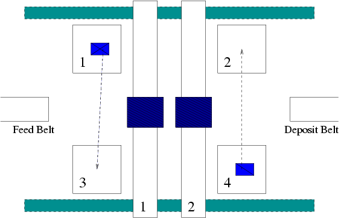
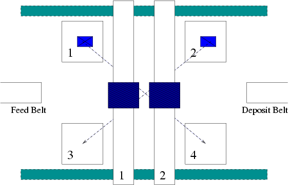

Revision History
Date
|
Issue
|
Description
|
Author
|
Mar. 6, 2004
|
V2004
|
Initial Creation
|
Alex, Brian, Mehdi, Navid
|
Mar. 22, 2004
|
V2004.1
|
Significantly more thought given
to resource allocation of the cranes. Added assumption that
system started up and shut-down manually by human, and that system
would be started up with no blanks in any of the units.
Simplified a requirement of processing order; now all blanks are
processed in the order specified on the barcode instead of just the
ones with the 'r' bit set.
|
Alex, Brian, Mehdi, Navid
|
|
|
|
|
|
|
|
|
Supplementary
Specification
1. Objectives
This set of documents were written in order to specify the automatic
production cell requirements. Requirements that do not appear in
the use-case model have been specified here, and together with the
use-case model, completely capture the requirements of the system.
2. Scope
This document applies to the automatic production cell system that is
being developed by the student team consisting of the members:
Alex Precosky
Brian Dowling
Mehdi Bahrami
Navid Boostani
Specified by this set of documents include the functional requirements
of the system in the form of the use-case model, and the non-functional
requirements of the system, which are mainly timing requirements.
3. References
This set of documents is based on the problem described in:
Mühlfeld, Dr. R, and Anette Lötzbeyer. "Task Description of a
Flexible Production Cell with
Real Time Properties." 30 Jul. 1996.
4. Functionality
In the event of an emergency shut-down, all of the devices in the
system
should be manually controllable by an operator. This is to allow
manipulation of the system if it is in a state that the system is not
designed to be able to start up in.
5. Usability
None.
6. Reliability
Blanks which are admitted into the system on the feed belt must
eventually exit the system on the deposit belt.
The blanks must go through the processing unit in the determined order,
if the r flag is set. For simplicity, all blanks are actually
processed in the order of operations as they appear on the barcode.
The blanks only go through the processing units given in the bar code
once.
7. Performance
A blank may not stay longer than t_G seconds in the system. This
time
is defined as the time between picking up the blank from the end of the
feed belt and the arrival of the blank on the deposit best which is
reported by the corresponding sensor.
If a piece is being processed by one of the devices, this must not last
longer than maxi seconds and may not be dropped before min_i seconds.
8. Supportability
None.
9. Security
None.
10. Safety
Cranes are not permitted to have the same x-position. This is to
ensure that they do not collide with each other. A crane 'n'
should always be to the right of crane 'n-1' and to the left of crane
'n+1'.
Cranes are only permitted to move if its gripper is in the upper
position.
A blank may only be put in a processing unit if that unit's sensor does
not detect a blank already present within that machine.
A blank may be put on the deposit belt only if the deposit belt sensor
does not detect the presence of a blank already at the beginning of the
belt.
11. Design Constraints
It is assumed that when the system starts up, there will be no blanks
in any of the units or held by any of the cranes.
In order to start up the system,
12. Resource
Allocation Policies
These issues arguably represent the most difficult and important part
of the design of the system, so ample space has been given to their
discussion.
There are two things that we need to deal with in our design. The first
is the case where we have blanks that need processing by the same
processing unit. While the other is the case where the might be a
collision between the two cranes which could happen, for example, if
the two cranes need to go far in opposite directions.
To deal with the processing unit contention we have set up our system
such that there is a processingUnitController that makes sure we do not
pick up any items from the feedbelt unless we can allocate to it the
processingUnits that it may need right now. Fundamentally, this is
resource reservation. If a blank needs processing units 1 and 2, then
the processingUnitController checks to see if any other blank has
reserved either of those two processingUnits. If not, then it reserves
the processingUnits for the blank, makes sure that no other blank can
reserve those two processingUnits, and then allows the blank into the
system by requesting a crane. To achieve the reservation, there is a
reserveByte inside the processingUnitController with each of the first
4 bits corresponding to one of the processingUnits. A processingUnit is
shown to be reserved by a 1 bit, and available by a 0-bit in the
appropriate place in the byte. The highest 4 bits we do not care about.
For example, 0011 would mean that processingUnits 2 and 1 are reserved;
similarly, 1010 means that processingUnits 4 and 2 are reserved.
When a blank needs to be moved, it calls the request method of the
CraneController class. The CraneController's first job then is to
decide which crane is going to handle the moving of the blank. To
simplify the design, we have designated certain movements to a
particular crane. Consider the movement of a blank from the feed
belt to its first processing unit. Since only the leftmost crane,
i.e. crane 1, can reach this position, these requests coming from there
will always be handled by crane 1. Similarly, for requests to
move a blank to the deposit belt, crane 2 will always be assigned that
task since only crane 2 can reach the deposit belt. Now, consider
the case of moving a blank to the other unit in the same X coordiante:

We have decided that crane 1 will always handle moves between units 1
and 3, which crane 2 will always handle moves between 2 and 4.
Now consider the case of moving a blank across the floor to a unit with
a different X-coordinate.

We have decided that crane 2 will always move units from the left units
to the right units, and that crane 1 will always move units from the
right units to the left units.
To deal with the deadlock and collision scenarios that may arise
because of conflicting crane destinations, we propose the following:
Each crane, before moving, will reserve all the positions in the
x=1,2,3…8 range that it will be passing through. This ensures that we
never have two cranes in the same x position – meaning no collisions.
That, however, leaves a deadlock situation that we need to deal with.
What if crane 1 is at x4 and needs to move to x6, while crane 2 is at
x5 and needs to go x3? We are going to deal with reserve requests on a
first-come-first-serve basis. If the request for crane 1 has come
first, then we first check to make sure crane 2 isn’t moving (which
means it is waiting), if it isn’t moving, we move crane 2 just out of
the way of crane 1 (by directly calling the system calls). Crane 1 then
reserves the appropriate x locations and starts moving. Immediately
after the start of the movement of crane 1, we check to see if crane 2
(or whichever crane is next) can now reserve all the locations it
needs. Note that crane 1 has reserved all the locations that it will be
passing through. If crane 2 can’t reserve all the locations it needs,
then it waits. If it can, then it will reserve the locations and it too
will start to move.
Aside:
If crane 1 was in its way, the above process starts again. Basically,
crane 2 will check to see if crane 1 is moving (meaning we can’t move
it), if it isn’t moving, then crane 1 is moved out of the way just far
enough, crane 2 reserves the x locations it needs and moves.
The pseudo-code below describes the algorithm:
request( source, dest )
{
int whichCrane = determineWhichCraneToAllocate(
source, dest );
byte bitMask = setBitmask(source, dest);
P(controllerlock);
// Wait until we are able to reserve the
x-coordinates we want
// Being able to means the x-coordinates we want are
not reserved by the other crane
while(!ableToReserve(bitmask))
cond_wait(signalledDone,
controllerlock);
reserveLocations(bitmask);
moveOtherCranesOutOfWay();
V(controllerlock);
}
signal_done( whichCrane )
{
P(controllerlock);
removeReservations(whichCrane);
signal(signalledDone);
V(controllerlock);
}
Back to index